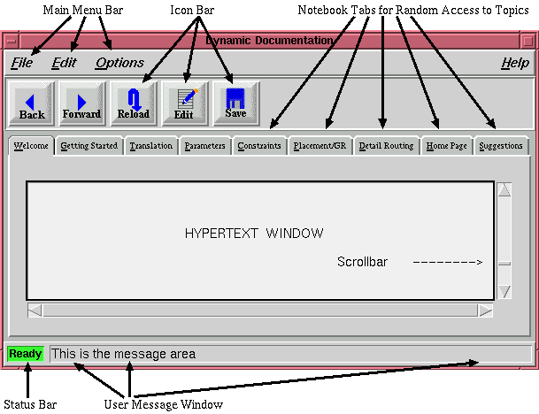
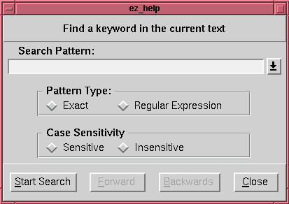
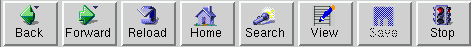

Dynamic Documentation is the first active hypertext system for Integrated Circuit Place and Route Systems. Unlike other passive help systems where documentation is added as an afterthought, Dynamic Documentation *IS* an active documentation wizard which does the work for you! But Dynamic Documentation is much more than just a wizard; it is a system where the software and documentation are one.
Dynamic Documentation is a revolutionary new graphical user interface (GUI) which allows users of all levels, from beginners to experts, to productively interact with a program. Dynamic Documentation supplies precisely the right amount of documentation detail based on the user's experience. Users will be led through the necessary documentation, and actually execute the program from within the documentation itself! Dynamic Documentation incorporates the latest advances in usability engineering, passing knowledge directly to the user.
This section describes a user's perspective of Dynamic Documentation. For a technical discussion please click here.
Dynamic Documentation is written in HTML (Hypertext Markup Language). Two extensions to standard HTML are used, JavaScript and plugins. Both of these extensions are available from the native browser. You must use the native browser in order to unlock the power of Dynamic Documentation.
The native browser is based on the general purpose Tcl/Tk interpreter. Tcl/Tk is an interpreted scripting language for creating textual and graphical interfaces. Applications use Tcl/Tk user interfaces and they can be invoked and communicate between themselves using Tcl/Tk. Learning Tcl is easy and we provide a list of recommended books for Tcl.
EZlearn browser is written completely in Tcl/Tk augmented with a Javascript interpreter. It is generally more stable than the Netscape's browser but supports only features needed to implement Dynamic Documentation.The other major function of Dynamic Documentation is to save and restore the user's state. This allows users to start up EZ where it was last exited. The state of design and display are stored in a number of Tcl variables. These variables are written out to the "~/.utdtools/eztcl.ini" file whenever they change. This file is read on startup.
This section only applies to itools native browser
EZCAD graphical user interface is composed of seven major parts namely, the main menu bar, the icon bar, the hypertext notebook, the hypertext display window, the hypertext scrollbar, the current status bar, and the user message area as shown in the picture below
.

The main menu bar contains pull down submenus which allow the user to execute commands. There are currently four pulldown menus in the menubar: File, Edit, Options, and Help.
Here we unroll the File pulldown menu:
The Source Tcl command is only available in Developer mode. It allows the developer to source a Tcl file without leaving EZ CAD. This is a productivity enhancement that allows the developer to write the Tk procedures incrementally without having to exit the entire program.
The Print command is available in all user modes and prints the contents of the currently displayed hypertext to a PostScript printer.
The Exit command terminates the EZ CAD program.
Now we present the Edit pulldown menu:
The Cut, Copy, and Paste commands under the Edit menu are only available in the Developer user mode during a hypertext edit. Otherwise, these commands are inactive.
Now we unroll the Options pulldown menu:
The Font Size command changes the font size of the hypertext. The cascade menu which is displayed offers small, medium, and large fonts. The Indent Amount command modifies the indentation distance for the display of ordered lists. Here too, the available choices are small, medium, and large. The User Mode command controls the current user knowledge level. The supported modes are Novice, Intermediate, Expert, and Developer. Each successive knowledge level allows the user access to more of the tools' capabilities.
The final submenu, the Help pulldown menu:
The Man Pages command displays the Unix manual pages from Tcl, Tk, Tix, and section 1 of the Unix system. A file selection dialog is presented and allows the user to determine the man page to display. By changing the directory in the file selection dialog, this command can display any man page on the system. Compressed man pages are supported.
The Where Is It? command performs a search of the hypertext or editing window. The following window is presented to the user:

The search string is entered on text entry area. A carriage command should be entered in order to add the pattern to the history list. The pattern entered may be either a regular expression or an exact search using glob style matching. In addition, the search may be made case sensitive or insensitive. The search is started by depressing the "Start Search" button. The search may continue either forward or backward by depressing the appropriate buttons. If no match is found you will be warned on the user message line. The Close button removes the search engine from the screen.

The Icon Bar presents the often used commands to the user. The hypertext traversal buttons - back and forward are prominently displayed in the icon bar. Back revisits the previously visited hypertext links. If the user, traverses backwards, they may return to their previous location by depressing the forward icon. The Reload icon is used to redisplay the current hypertext document. If the user was viewing or editing the source of the hypertext, source is replaced with the rendering of it. The Home icon redisplays the entry point HTML for the current topic denoted by the raised tab. It allows the easy traversal to the top of the current topic. The Search mode renders the search hypertext system in order to find a topic. The View or Edit icon allows the user to view and edit the hypertext source respectively. The Edit icon is available only in the "Developer" user mode; otherwise, the View icon is presented. The Save icon is only available in "Developer" mode and saves the current copy of the hypertext source. The original hypertext source is renamed to filename.orig. The Stop icon stops the rendering of the current HTML.
The hypertext display consists of the Tix notebook, the main hypertext window, and its accompanying scrollbar. The key feature to the hypertext display is the ability to access the documentation both sequentially and randomly. The tabs on the notebook choose the general topic of interest whereas the scrollbar permits sequential access of the current document. It is this power to access documentation both sequentially and randomly that makes Dynamic Documentation a leader in usability engineering.
The current status bar, and the user message area are designed to give the user feedback during interaction session. The current status bar has two messages: Ready and Busy. The busy message indicates that the program is executing and that the user should wait before entering a new command. It should be noted that the system periodically displays the incompletely drawn hypertext in order to inform the user of its progress. The ready message indicates that EZ CAD is waiting for its next command.
The user message area displays messages from the execution of the hypertext. Normal messages are displayed with a foreground color of black, warning messages are displayed with a foreground color of blue, and error messages are displayed in red. The message area is persistent, that is, the message remains displayed until another message occurs to overwrite it.
We have presented a revolutionary new active hypertext documentation system and graphical user interface. This system understands different user knowledge levels, actively integrates the program into the documentation, and incorporates the latest research in usability engineering.